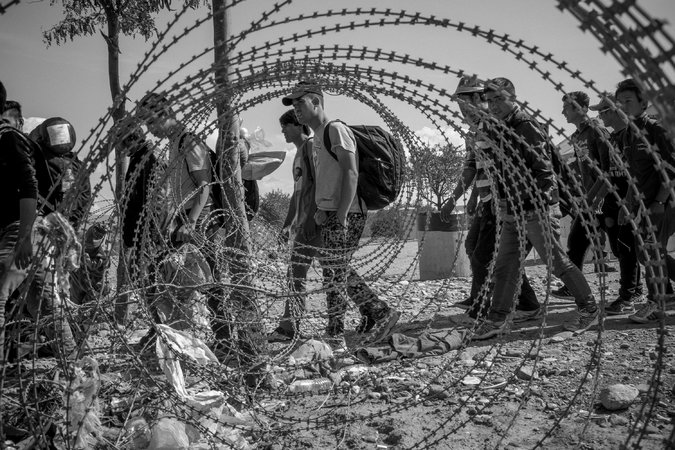

by By GLENN THRUSHMARCH 6, 2017

It also exempts permanent residents and current visa holders, and drops language offering preferential status to persecuted religious minorities, a provision widely interpreted as favoring other religious groups over Muslims. In addition, it reversed an indefinite ban on refugees from Syria, replacing it with a 120-day freeze that requires review and renewal.
Micheál Martin said there is a need to know what would happen if a referendum passed to reunite Ireland

Speaking on RTÉ's Today with John Murray, he added there should be all-island agencies such as Enterprise Ireland and the Food Safety Authority. Mr Martin said that anyone who is interested in a united Ireland should have a blue print on the matter, and that there was an obligation to spell out how a united Ireland would work. Pointing to the uncertainty and confusion caused after the UK voted to leave the EU, Mr Martin said there was a need to be aware of politicians promoting the idea of a referendum without having "the foggiest idea what will happen the day after it passes."
Britain could begin the formal process of leaving the European Union as early as Tuesday
Britain could begin the formal process of leaving the European Union as early as Tuesday if legislation approving the move passes its final hurdles on Monday. Both houses of the UK parliament will vote on the EU Withdrawal Bill later. If it is passed, the bill would allow Prime Minister Theresa May to invoke Article 50 of the Lisbon Treaty, which governs the relationships between EU member states.
That would give the UK a two-year window in which to hammer out a divorce deal with the other 27 EU governments. The negotiations are expected to be tough, and there is no guarantee that a deal could be reached in the time available."Any delay in the parliamentary process could mean the process would be pushed later in the month" Any delay in the parliamentary process could mean the process would be pushed later in the month, as the UK government wants to avoid a clash with the Dutch elections, which are held on Wednesday.
MPs in the House of Commons vote on the EU Withdrawal Bill first. They are expected to reject two amendments added by the Lords in the past few weeks. One amendment relates to the rights of European citizens remaining in the UK after Brexit and the second gives Parliament a "meaningful" vote on the terms of the exit deal.
By VIET THANH NGUYENMARCH 10, 2017
You own a house or rent an apartment. You live with your family or by yourself. You wake in the morning and drink your coffee or tea. You drive a car or a motorbike, or perhaps you take the bus. You go to work and turn on your computer. You go out at night and flirt and date. You live in a small town or big city, although maybe you are in the countryside. You have hopes, dreams and expectations. You take your humanity for granted. You keep believing you are human even when the catastrophe arrives and renders you homeless. Your town or city or countryside is in ruins. You try to make it to the border. Only then, hoping to leave, or making it across the border, do you understand that those who live on the other side do not see you as human at all.
This is the dread experience of becoming a refugee, of joining the 65 million unwanted and stateless people in the world today. It is also the experience that Mohsin Hamid elicits quietly and affectingly in his new novel, “Exit West,” which begins “in a city swollen by refugees but still mostly at peace, or at least not yet openly at war.” The city and the country are unnamed, unlike the two characters at the story’s center: Saeed and Nadia, a young man and woman whose courtship begins in this moment of impending crisis. They are cosmopolitan city dwellers who meet in “an evening class on corporate identity and product branding,” and whose first date is at a Chinese restaurant.
Hamid’s enticing strategy is to foreground the humanity of these young people, whose urbanity, romantic inclinations, upwardly mobile aspirations and connectedness through social media and smartphones mark them as “normal” relative to the novel’s likely readers. At the same time, he insists on their “difference” from readers who may be Western. Their city is besieged by militants who commit terrible atrocities, evoking scenes from Mosul or Aleppo. As for Nadia, she was “always clad from the tips of her toes to the bottom of her jugular notch in a flowing black robe.” But while this robe seems to be a form of conservative Islamic dress, one of the starkest signs of difference between Nadia and non-Islamic readers, she is more daring than Saeed. She is the one who offers him marijuana and psychedelic mushrooms, and she is the one who initiates sex. The robe, it turns out, is camouflage to allow Nadia to be an independent woman.
The backdrop for “Exit West” is both the plight of refugees from places like Syria and the specter of Islamic fundamentalism and terrorism. Hamid takes full advantage of our familiarity with these scenes to turn “Exit West” into an urgent account of war, love and refugees. Politics also matters as it does in his other novels, which likewise dealt with pressing issues: the troubles of contemporary Pakistan (“Moth Smoke”); 9/11 and the tensions between being Pakistani and American (“The Reluctant Fundamentalist”); and naked capitalism and ambition in an unnamed country (“How to Get Filthy Rich in Rising Asia”). Throughout his oeuvre, Hamid envisions an interconnected world in which East and West inevitably meet as a consequence of complicated histories of colonization and globalization. The dramas and love stories of individuals like Saeed and Nadia cannot be separated from these histories, even if, in their own lives, those histories are not necessarily preoccupations. Until, that is, those histories erupt.
by FRANZ KAFKA
One morning, when Gregor Samsa woke from troubled dreams, he found himself transformed in his bed into a horrible vermin. He lay on his armour-like back, and if he lifted his head a little he could see his brown belly, slightly domed and divided by arches into stiff sections. The bedding was hardly able to cover it and seemed ready to slide off any moment.
His many legs, pitifully thin compared with the size of the rest of him, waved about helplessly as he looked. "What's happened to me?" he thought. It wasn't a dream. His room, a proper human room although a little too small, lay peacefully between its four familiar walls. A collection of textile samples lay spread out on the table - Samsa was a travelling salesman - and above it there hung a picture that he had recently cut out of an illustrated magazine and housed in a nice, gilded frame. It showed a lady fitted out with a fur hat and fur boa who sat upright, raising a heavy fur muff that covered the whole of her lower arm towards the viewer. Gregor then turned to look out the window at the dull weather.